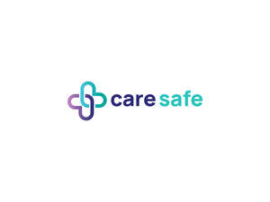

Trade Mark Journal No.2025/027 4 July 2025
UK00004210474 28 May 2025 (35,39,41,44)

- Class 35
- Management of health care clinics for others.
- Class 39
- Services for transportation; Transportation services; Passenger transportation services; Services for the transportation of passengers; Rescue services [transportation]; Transportation; Transport services; Services for the arranging of transportation; Car transport services; Passenger transport services; Services for the transportation of travellers; Transportation services for medical staff; Transportation services for the injured; Travel and transport reservation services; Transportation services for the sick; Transportation services for nursing staff; Road transport services; Reservation and booking services for transportation; Passenger road transport services; Passenger transportation services by land; Road transport services for persons; Taxi services; Transport services for the disabled; Airport services.
- Class 41
- Personal training services; Education services relating to quality services; Medical education services; Education services relating to health; Education information services; Provision of educational services relating to health; Education services relating to customer satisfaction.
- Class 44
- Medical care services; Home health care services; Services for the provision of medical care information; Provision of health care services; Health care consultancy services [medical]; Consulting services relating to health care; Information services relating to health care; Consultancy services relating to health care; Nursing care services; Managed health care services; Mobile dental care services; Providing information relating to nursing care services; Professional consultancy relating to health care; Health care services offered through a network of health care providers on a contract basis; Health advice and information services; Healthcare information services; Medical services; Medical information services; Medical care and analysis services relating to patient treatment; Healthcare services; Medical health assessment services; Respite care services in the nature of home nursing aid; Consultancy relating to health care; Residential medical advice services; Medical and healthcare services; Medical care; Medical assistance services; Health care; Advisory services relating to medical services; Medical counseling services; Health assessment services; Mental health services; Rental of medical and health care equipment; Provision of medical services; Health resort services [medical]; Health-care services; Technical consultancy services relating to medical health; Health clinic services; Outpatient and inpatient care services; Human healthcare services; Advice relating to the personal welfare of elderly people [health]; Health clinic services [medical]; Health center services; Medical counselling services; Individual medical counseling services provided to patients; Consultancy and information services relating to medical products; Personal therapeutic services relating to circulatory improvement; Providing health care information by telephone; Medical nursing services; Nursing services (Medical -); Health care in the nature of health maintenance organizations; Medical treatment services; Health care services for treating Alzheimer's disease.
Health Tech Services Group Ltd